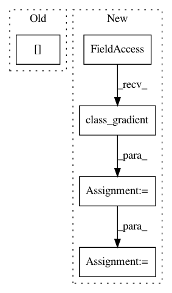

063c572b5b09fb8492beee938589cf5984f84926,art/estimators/classification/ensemble.py,EnsembleClassifier,class_gradient,#EnsembleClassifier#Any#Any#Any#,234
Before Change
grads = np.array(
[
self._classifier_weights[i] * self._classifiers[i].class_gradient(x, label)
for i in range(self._nb_classifiers)
]
)
After Change
% (str(classifier.input_shape), str(classifiers[0].input_shape))
)
self._input_shape = classifiers[0].input_shape
self._nb_classes = classifiers[0].nb_classes
// Set weights for classifiers
if classifier_weights is None:
classifier_weights = np.ones(self._nb_classifiers) / self._nb_classifiers
self._classifier_weights = classifier_weights
// check for consistent channels_first in ensemble members
for i_cls, cls in enumerate(classifiers):
if cls.channels_first != self.channels_first:
raise ValueError(
"The channels_first boolean of classifier {} is {} while this ensemble expects a "
In pattern: SUPERPATTERN
Frequency: 3
Non-data size: 5
Instances
Project Name: IBM/adversarial-robustness-toolbox
Commit Name: 063c572b5b09fb8492beee938589cf5984f84926
Time: 2020-12-18
Author: beat.buesser@ie.ibm.com
File Name: art/estimators/classification/ensemble.py
Class Name: EnsembleClassifier
Method Name: class_gradient
Project Name: IBM/adversarial-robustness-toolbox
Commit Name: 246d18f21ba69f06e86da51ab16e499efacbf30f
Time: 2018-04-17
Author: Maria-Irina.Nicolae@ibm.com
File Name: src/attacks/saliency_map.py
Class Name: SaliencyMapMethod
Method Name: _saliency_map
Project Name: IBM/adversarial-robustness-toolbox
Commit Name: a4376fc2e3c1eec67decf36bc0a1771ad17a771e
Time: 2018-04-24
Author: M.N.Tran@ibm.com
File Name: src/attacks/carlini.py
Class Name: CarliniL2Method
Method Name: generate